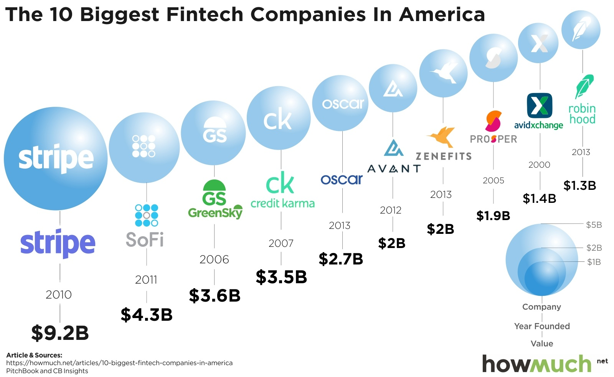

As a current Computer Science student, I have undertaken the task of finding an industry that truly interests me. This is driven by the realization that in today’s technology-driven world, there are many opportunities across various sectors. While some students might opt for the industry of their initial job and stick with it, and some may move around, I believe that I’d like to find my place in the realm of Consumer Financial products. This encompasses emerging fintech companies like Wealthfront, Robinhood, Ally Bank, and more established companies such as Fidelity, local credit unions, and major banks like Chase.
For me, I’d like to contribute to the development side of their products, specifically focusing on the backend, with perhaps a dabbling in the frontend. Given that this industry frequently employs custom technology stacks, my intention isn’t to fixate on a particular stack but to evolve into a better-rounded developer. This means using all available tools, including AI code generators, to enhance my speed and make better applications.
Nonetheless, there are some technologies I’d like to explore in the near future. These include TypeScript, React Native, Ruby on Rails, and iOS development. In my spare time outside of school, I am currently dedicated to completing my personal finance tracking application and eventually releasing it on GitHub. Following this, I want to start one of my other project ideas.
Beyond programming and Computer Science, I have an additional interest that may serve as a night job in the future. Since 2021, I have been serving at various restaurants, and I hope to continue this in the future, potentially as a nighttime occupation. I enjoy providing excellent service and enhancing people’s evenings. Furthermore, this type of job complements a daytime corporate career very well.
Image Source: link